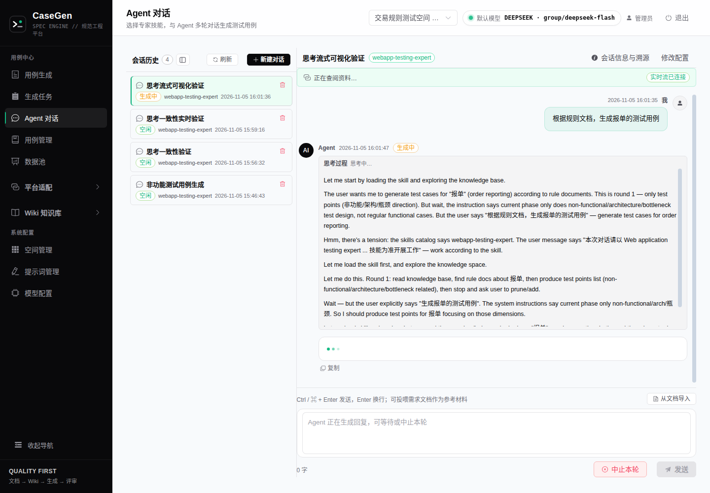
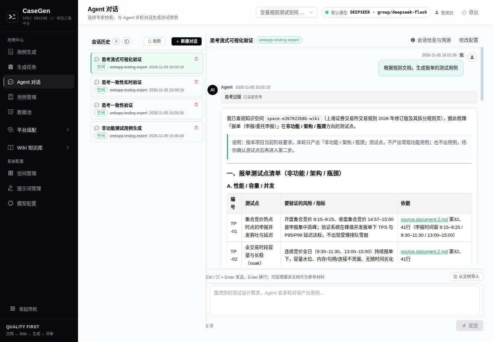
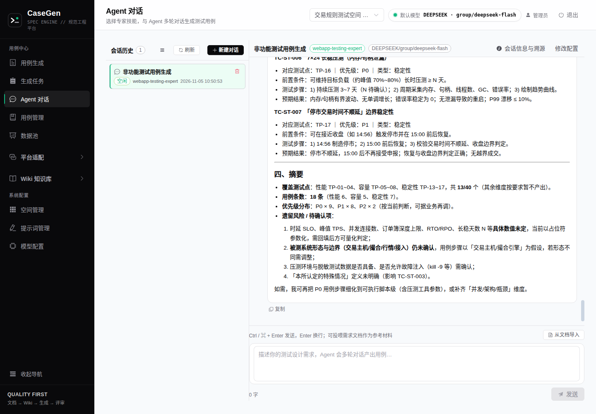
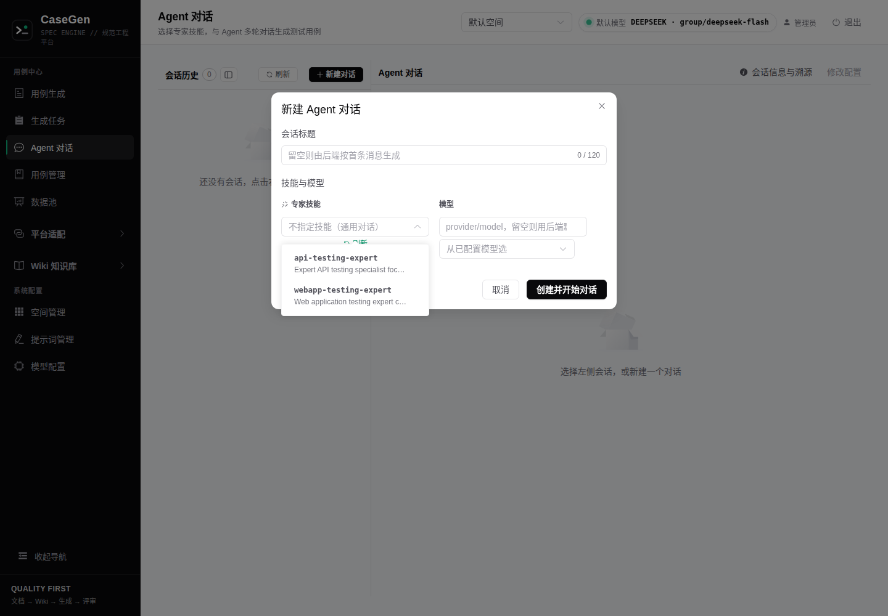
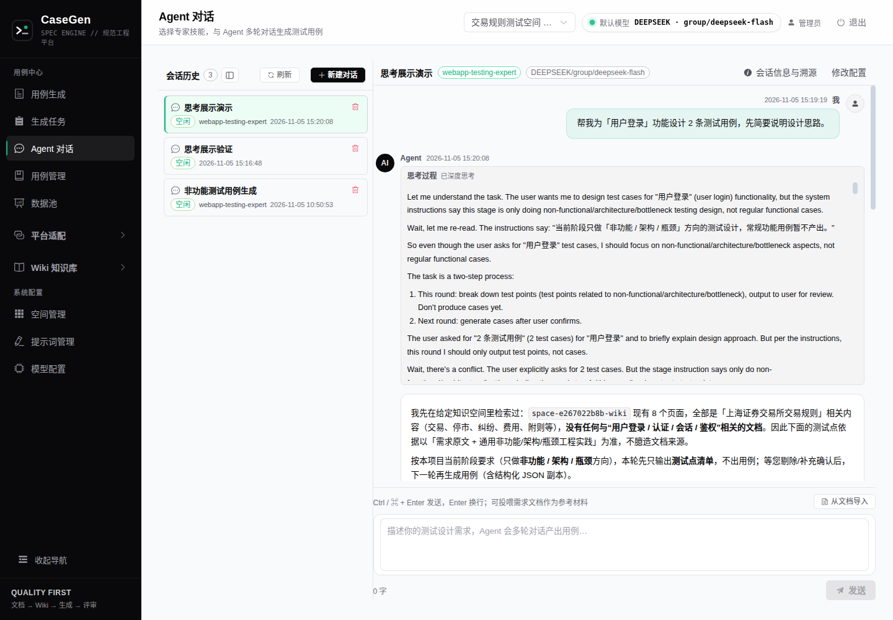
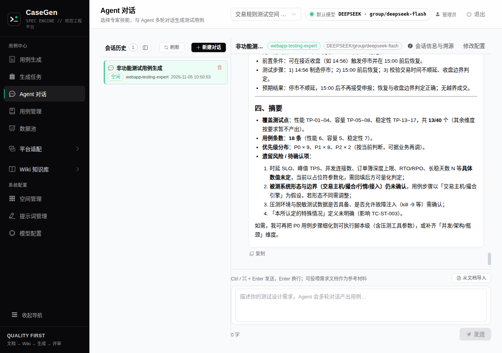
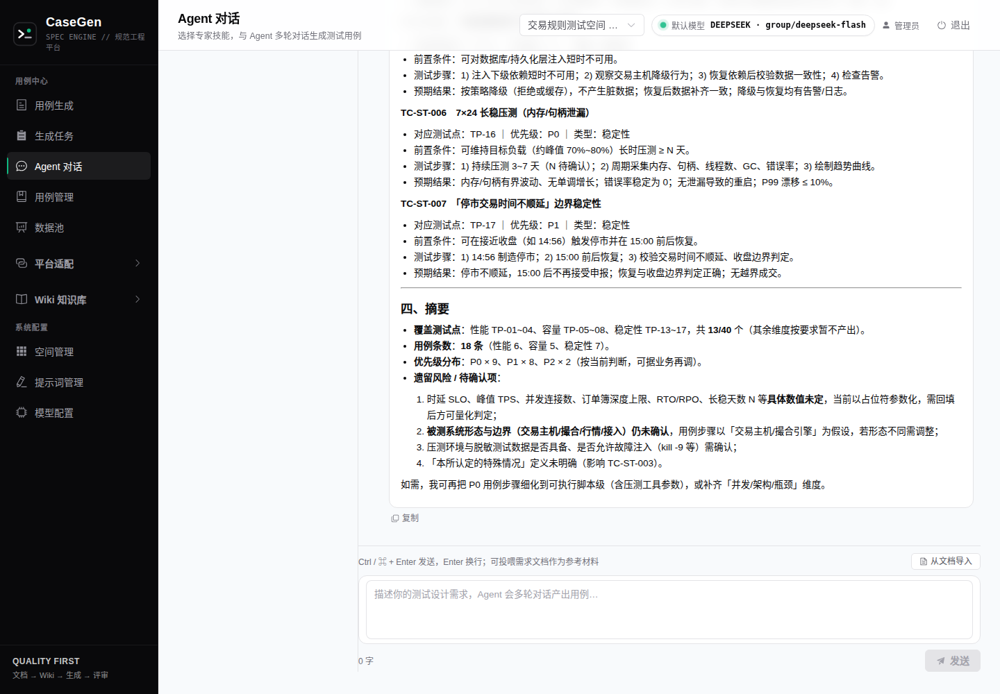

演示数据声明：本演示文稿中的页面截图来自验证环境，会话与知识库内容为演示数据，非生产业务数据。
自然语言多轮对话；思考过程独立折叠展示，最终答案干净呈现；刷新后仍可恢复。
结构化用例卡片、一键转存草稿并原子入库；技能按需加载，不常驻上下文。
会话级目录隔离、错误白名单脱敏、工具白名单收口，权限降到最小。
一页讲清三大重点能力：专家技能、思考与多轮工具调用、权限限制；底层运行时对接见架构页。口播聚焦功能本身，不展开工程过程。
目录页即导航页，点击条目可直接跳到对应功能章节。
从使用者视角讲价值：能对话、能选专家、能看到思考、能约束权限。
只把干净正文与思考流送到前端；工具参数与结果留在网关内，不进入页面。
首帧必为全量 snapshot，刷新或重连即重发 snapshot 恢复现场；事件带 id 序号，GET 详情为权威轮询兜底。
浏览器永不直连 31800；会话归属项目校验；响应头 no-store / nosniff / X-Accel-Buffering: no；非活跃状态返回 409。
架构重点是「浏览器零直连」与「DSH 只绑回环」，以及只把干净正文与思考流送到前端。
.agents/skills/<name>/SKILL.md，随版本管理、分发与 PR 评审。GET /api/agent/skills 由 CaseGen 后端直接扫描技能目录。专家技能的价值在于随仓库走：版本管理、PR 评审、可审计；注入方式保持纯文本前缀，按需加载不常驻上下文。
kind='reasoning'；每个 tool_call 生成边界事件。GET /sessions/:id/history 为全量审计通道。讲功能表现：思考独立透传、落库、折叠展示；多轮工具调用由 DSH 侧 Agent 完成，页面只看到匿名化边界与思考流。


截图来自验证环境（后端 8001 / Vite 5173、headless Chrome 1440×1000），会话与知识库内容为演示数据，非生产业务数据。左图过程可见，右图答案干净。
DSH 会话默认 danger-full-access，创建后立刻 PUT /permission 压降为 workspace-write；压降失败即 ensure_session 整体失败，绝不带着高权限继续。
每会话独立 <AGENT_WORKSPACE_ROOT>/<conversation_id>/，路径前缀守卫防目录穿越；已移出 data/，与存明文模型 API Key 的 data/meta 完全隔离，数据库文件绝不会成为 agent cwd。
六工具 read / read_image / glob / grep / todo_write / skill；两层防线 tools.restrict + 执行期 guard；preset 内 write:false / edit:false，抑制 agent-team 成员资格；persona 明令不执行命令、不联网、不改动知识空间文档。
cookie session + 同源 / CSRF；会话归属项目校验；AGENT_ENABLED=false 时 /api/agent/* 返回 410、前端菜单软降级。错误只导出白名单原语，不插值原始响应 / URL / 凭据。并发：AGENT_MAX_CONCURRENT=4 + 会话级互斥，当前单进程。
四层收口：会话权限压降、独立工作目录、工具白名单、访问与错误脱敏；思考可见但工具参数与结果不外泄。





截图来自验证环境（后端 8001 / Vite 5173、headless Chrome 1440×1000），会话与知识库内容为演示数据，非生产业务数据；截图均完整呈现、不裁切。
管理员 / 普通用户；/api/users 与「用户管理」页支持创建、停用、改角色、重置口令。首个管理员仍走 /setup。
数据池、平台适配、WIKI 知识库、空间管理、模型配置对普通用户隐藏：菜单隐藏 + 路由守卫 双保险，配置写操作补 admin 门禁。
提示词管理对全部用户可见、可编辑，不做用户隔离；生成流程依赖的后端查询能力保留，不加门禁。
这一页对应原规划 PLAN 01，现已落地。口播聚焦两级角色与「只隐藏菜单与页面、后端查询能力保留」的定稿取舍，强调提示词全员可见可编辑。
user_id，列表 / 详情 / 消息 / 流式 / 删除全链路按归属过滤。is_public：关闭后普通用户下拉列表不再出现。这一页讲两层隔离：对话按用户私密、业务数据沿用项目隔离并由 is_public 控制可见性。口播强调「选不到自然没有入口」的中性 404 语义，以及存量数据回填不打断升级。
已打通「对话产出 → JSON 契约校验 → 转存用例草稿 → 人工确认 → 入库」。
继续打通评审 / 定稿 / 归档全链路。
让对话产出成为可治理资产；关键工作是评审状态机、定稿版本留痕、归档索引与权限。
已有需求文档、规则资料与历史用例可作为评测素材，但尚未形成统一的基准集与评分口径。
基于已有资料搭建可复跑的非功能用例生成 benchmark，固化输入集、评分维度与验收基线。
让生成质量可度量、可对比；关键工作是基准集构建、评分口径定义与回归跑批。
本页讲两个后续方向：对话用例全流程归档、非功能用例生成 benchmark；对话产出已打通到入库，评审 / 定稿 / 归档仍是下一步。
演示数据声明：截图来自验证环境，会话与知识库内容为演示数据，非生产业务数据。